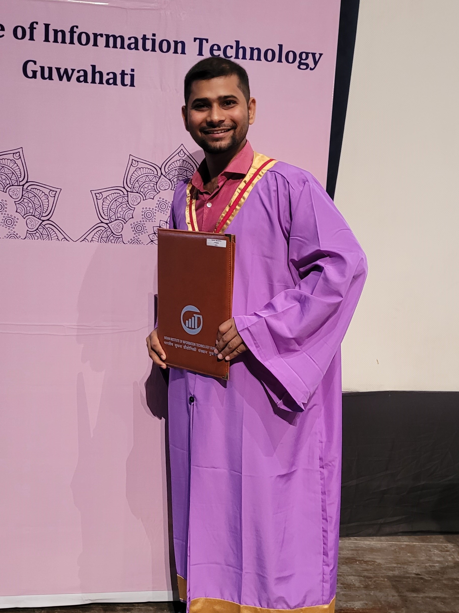
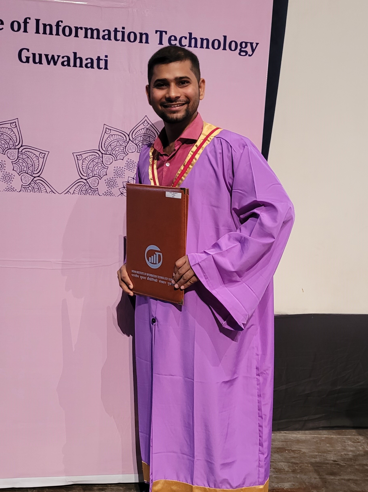
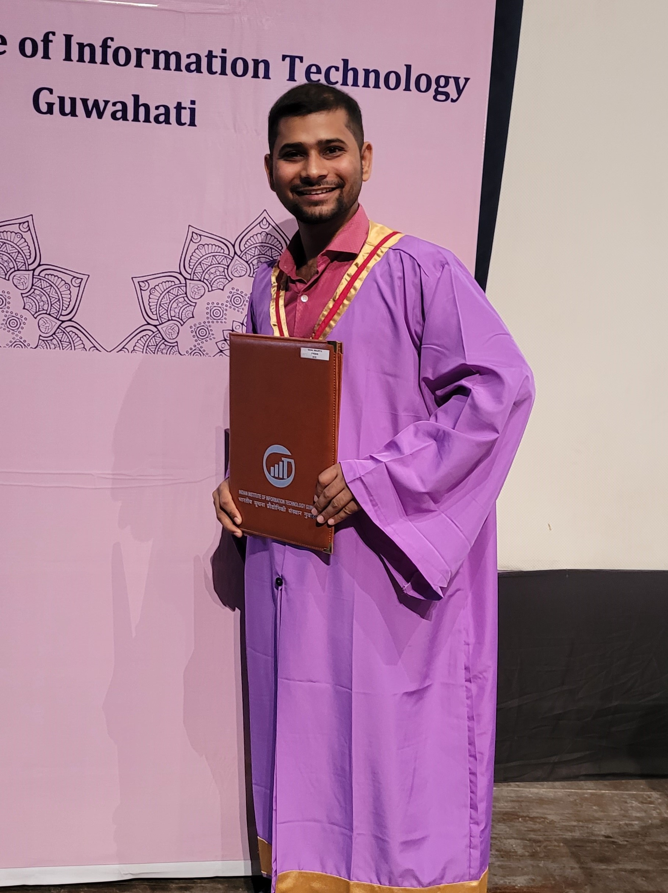

11. Image Gallery
 

"The future belongs to those who believe in the beauty of their dreams." - Eleanor Roosevelt

Hello and welcome to my profile! I'm Sahil Maurya, a recent M.Tech graduate from the Indian Institute of Information Technology, Guwahati. I am a VLSI enthusiast, specializing in Digital Design Architecture, Hardware Design, FPGA, Code with Verilog HDL, and In-Memory Computing. I completed my M.Tech project under the guidance of Dr. Babita Jajodia. My experience with her was transformative, steering my life towards the engineering domain. I hail from a small village in Uttar Pradesh and completed my schooling in Hindi medium. My journey to IIIT Guwahati has been both romantic and dramatic. Although I initially pursued a B.Tech in Electronics & Communication Engineering, I wasn't fully focused on engineering during those years. From a young age, my dream was to become an Air Force pilot. In my third year of B.Tech, I cracked the NDA exam and was recommended for the Indian Air Force. However, due to medical reasons, I was unable to join. Following this setback, I took a break from my studies, leaving my B.Tech program after the fifth semester with 12 backlogs, both in theory and practical subjects. Despite these challenges, I returned to my engineering college and re-enrolled in the seventh semester. With determination and perseverance, I cleared all my backlogs within a year and graduated with first-class honors. Shortly after, I had the opportunity to pursue my Master's at IIIT Guwahati, where I met some of the best professors, including my supervisor, Dr. Babita Jajodia. Since completing my degree, I have continued to push forward, never looking back, and always striving for excellence. Outside of my academic pursuits, I love to explore new places, meet new people, and immerse myself in their cultures. I also have a passion for playing cricket, reading novels, watching movies and historical dramas. Additionally, I enjoy writing stories and poems, as well as singing.
üìû +91-7270020537
üìß sahil.maurya21@iiitg.ac.in
üìß shivam.maurya0077@gmail.com
üè† Janki Vihar Colony, Jankipuram
Lucknow, Uttar Pradesh, India - 226021
Programming Language: Verilog HDL, C
Synthesis & Simulation Tool: Xilinx Vivado & ISE, FPGA, Cadence Virtuoso, Genus, Innovus, Xcelium Logic Simulator, EDA Playground, Matlab & Simulink, TINA-TI, LTSpice, Tinkercad
Area Of Interest: Digital VLSI Design, Memory Design (SRAM, DRAM), Neuromorphic Computing, In Memory Computing, Quantum Cryptography, Hardware Architecture Design, Design Algorithms
